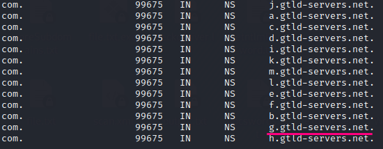

Delegation Signer (DS)
Delegation Signer(DS) is the hash value of the
DNSKEY public KSK and is stored in the parent zone
◇ when the resolver have to check the validity of of the child zone DNSKEY, hash it and compares it to the DS record from the parent zone
◇ Each DS record to be trusted just like any other RRset, is signed with the private key of the parent and stored in a RRSIG
When we ask for the DS this is provided directly from the parent zone, differently from the other resource resource records that are provided from the child zone
dig -t DS +dnssec +multiline +trace @8.8.8.8 <domain>
The
DS and the correspondent signed RRSIG DS are stored both in the parent zone, precisely in this case in one of the 13 Root DNS server that hold data for the TLD .com
Here we can ask for all 13 Rott DNS server for the TLD com. We can verify that
g.gtld-servers.net from which we had response is one of them
